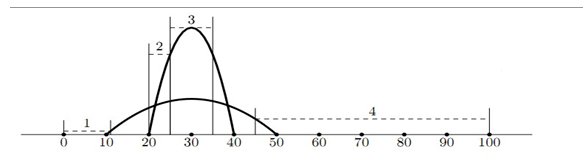
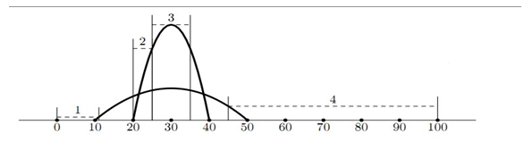

给N个抛物线(只会完整地存在在第一象限，不在第一象限的部分不需考虑， 如图)
询问M次 每次询问第i到第j个抛物线在[l, r]的x坐标区间上的最小值

| F.A.Qs | Home | Discuss | ProblemSet | Status | Ranklist | Contest | 入门OJ | ModifyUser Xeonacid | Logout | 捐赠本站 |
|---|
给N个抛物线(只会完整地存在在第一象限，不在第一象限的部分不需考虑， 如图)
询问M次 每次询问第i到第j个抛物线在[l, r]的x坐标区间上的最小值

1 ≤ n ≤ 50 000
0 ≤ p < x ≤ 50 000,
0 < y ≤ 50
1 ≤ m ≤ 20 000
0 ≤ l ≤ r ≤ 50 000
1 ≤ a ≤ b ≤ n